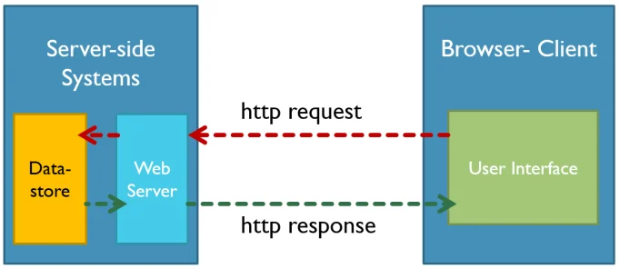
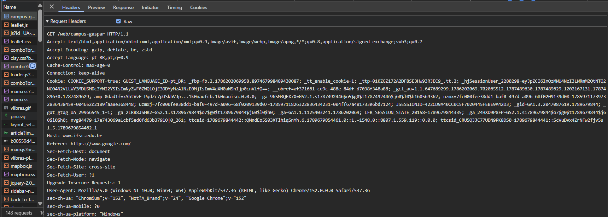
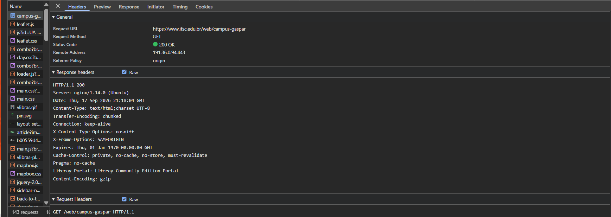

O Protocolo de Transferência de Hipertexto (HTTP) é um protocolo de comunicação utilizado para a transferência de dados na World Wide Web. Ele define como as mensagens são formatados e transmitidos entre navegadores e servidores web.
Para entender melhor como o HTTP funciona, é importante conhecer seus conceitos fundamentais, como solicitações e respostas.

Primeira linha da requisição: A primeira linha de uma requisição HTTP contém três elementos principais: o método HTTP, o caminho do recurso solicitado e a versão do protocolo HTTP. Por exemplo, uma requisição típica pode ser representada da seguinte forma:
GET/HTTP/1.1
GET: é um método HTTP, também chamado de verbo HTTP, que indica ao servidor qual ação o cliente deseja realizar. Nesse caso, o cliente solicita que o servidor envie ou consulte determinada informação.
HTTP: Após o GET, aparece o caminho do recurso que está sendo solicitado ao servidor. Por exemplo, para acessar a página de contatos de um site, esse caminho poderia ser /contatos.html.
1.1: é a versão do protocolo HTTP que está sendo utilizada na comunicação entre o cliente e o servidor. A versão 1.1 é uma das versões mais comuns do protocolo HTTP.
Exemplo de requisição HTTP:
Uma requisição HTTP também pode conter cabeçalhos, que representam informações adicionais. No exemplo abaixo tanto o Host quanto o User-Agent são cabeçalhos:
Host: devmedia.com.brUma resposta HTTP também possui uma estrutura específica. A primeira linha da resposta contém o código de status, que indica o resultado da solicitação feita pelo cliente. Por exemplo, um código de status 200 significa que a solicitação foi bem-sucedida, enquanto um código 404 indica que o recurso solicitado não foi encontrado.
Exemplo de resposta HTTP:
HTTP/1.1 200 OK
Cache-Control: no-cache, must-revalidate
Content-Type: text/html; charset=ISO-8859-1
...
Na primeira linha, é possível identificar a versão do protocolo HTTP, neste caso, HTTP/1.1 e o retorno 200 indica que a solicitação foi bem-sucedida.
Em seguida, aparecem os cabeçalhos da resposta:
Cache-Control: que indica como o cliente deve manipular o conteúdo em cache
Content-Type: que especifica o tipo de conteúdo retornado pelo servidor
Qualquer pessoa pode acessar informações sobre o modelo HTTP request-response utilizando ferramentas de desenvolvedor em navegadores modernos, como o Google Chrome, Mozilla Firefox ou Microsoft Edge. Essas ferramentas permitem inspecionar as requisições e respostas HTTP feitas pelo navegador ao acessar diferentes sites.
Para acessar essas informações, basta abrir as ferramentas de desenvolvedor (geralmente pressionando F12 ou clicando com o botão direito do mouse e selecionando "Inspecionar") e navegar até a aba "Network" (Rede). Nessa aba, é possível visualizar todas as requisições HTTP feitas pelo navegador, incluindo detalhes sobre os métodos utilizados, os cabeçalhos enviados e recebidos, os códigos de status das respostas e muito mais.
Exemplo de requisição HTTP: página do IFSC Gaspar

